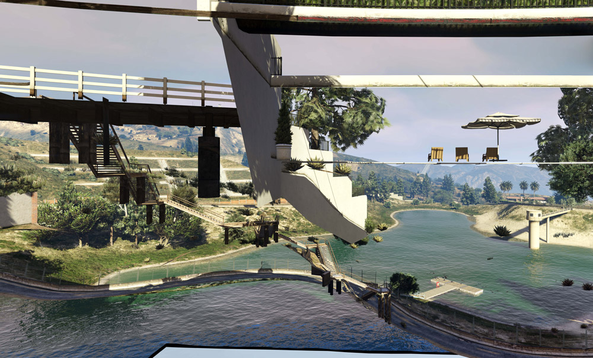

8 Glitch Art
//intro to error in photography (Clément Chéroux) and glitch art
Captures by Raphael Brunk
 Raphael Brunk, Capture75011.12_23 , 2016
Raphael Brunk, Capture55326.4_19, 2016
 *
* Tutorial
Controlling the Game Camera
Example code
//this code was kindly provided by LeeC22 on https://gtaforums.com/topic/981454-free-cam-mode-in-c/#comment-1072077418
using System;
using System.Windows.Forms;
using GTA;
using GTA.Math;
using Control = GTA.Control;
namespace BasicFreeCamTest
{
public class cBasicFreeCamTest : Script
{
private Keys ActivationKey = Keys.O;
private bool FreeCamActive = false;
private Camera FreeCam;
public cBasicFreeCamTest()
{
Tick += onTick;
KeyUp += onKeyUp;
Aborted += onAborted;
Interval = 0;
}
private void onTick(object sender, EventArgs e)
{
// Exits from the loop if the game is loading
if (Game.IsLoading) return;
if (FreeCamActive) UpdateFreeCam();
}
private void UpdateFreeCam()
{
float deltaTime = Game.LastFrameTime;
float speed = 5f;
float camSpeed = speed * deltaTime;
float rotSpeed = 40f;
float camRotSpeed = rotSpeed * deltaTime;
Game.DisableAllControlsThisFrame(2);
Vector3 camForward = FreeCam.Direction.Normalized; //FreeCam.ForwardVector
Vector3 camRight = Vector3.Cross(Vector3.WorldUp, camForward); //FreeCam.RightVector
Vector3 camUp = Vector3.Cross(camRight, camForward); //FreeCam.UpVector?
if (Game.IsDisabledControlJustPressed(2, Control.FrontendCancel))
{
World.RenderingCamera = null;
FreeCam.Destroy();
FreeCamActive = false;
return;
}
float fbSpeedMult = Game.GetDisabledControlNormal(2, Control.MoveUpDown);
float lrSpeedMult = Game.GetDisabledControlNormal(2, Control.MoveLeftRight);
float yawSpeedMult = Game.GetDisabledControlNormal(2, Control.LookLeftRight);
float pitchSpeedMult = Game.GetDisabledControlNormal(2, Control.LookUpDown);
float fbSpeed = camSpeed * fbSpeedMult;
float lrSpeed = camSpeed * lrSpeedMult;
float yawSpeed = camRotSpeed * yawSpeedMult;
float pitchSpeed = camRotSpeed * pitchSpeedMult;
Vector3 camLR = camRight * -lrSpeed;
Vector3 camFB = camForward * -fbSpeed;
Vector3 camMove = camLR + camFB;
Vector3 camRot = new Vector3(pitchSpeed, 0, -yawSpeed);
FreeCam.Position += camMove;
FreeCam.Rotation += camRot;
}
private void onKeyUp(object sender, KeyEventArgs e)
{
if (e.KeyCode == ActivationKey)
{
//toggle the freecam on/off
FreeCamActive = !FreeCamActive;
if (FreeCamActive) //ON
{
FreeCam = World.CreateCamera(GameplayCamera.Position, GameplayCamera.Rotation, GameplayCamera.FieldOfView);
World.RenderingCamera = FreeCam;
UI.ShowSubtitle("FreeCam ON", 1000);
}
else //OFF
{
World.RenderingCamera = null;
FreeCam.Destroy();
UI.ShowSubtitle("FreeCam OFF", 1000);
}
}
}
private void onAborted(object sender, EventArgs e)
{
World.RenderingCamera = null;
}
}
}

Create Multiple Cameras
Example code
using System;
using System.Collections.Generic;
using System.Linq;
using System.Text;
using System.Threading.Tasks;
using GTA;
using GTA.Math;
using System.Windows.Forms;
using System.Drawing;
using GTA.Native;
namespace ModdingTutorial
{
public class ModdingTutorial : Script
{
Vector3 myCamPos;
int CamSelect = 0;
int CamCount = 3;
List<Ped> myPeds = new List<Ped>();
Model myModel = PedHash.Abigail;
List<Vector3> myLocs = new List<Vector3>();
Camera newCam= null;
List<Camera> myCam = new List<Camera>();
public ModdingTutorial()
{
this.Tick += onTick;
this.KeyUp += onKeyUp;
this.KeyDown += onKeyDown;
myLocs.Add(new Vector3(450.178f, 5566.614f, 806.183f)); //Mt.Chiliad
myLocs.Add(new Vector3(24.775f, 7644.102f, 18.055f)); //Most Northern Point
myLocs.Add(new Vector3(150.126f, -754.591f, 261.865f)); //FIB Roof
for (int i = 0; i < CamCount; i++)
{
//create Ped
var newPed = World.CreatePed(myModel, myLocs[i]);
Function.Call(Hash.SET_ENTITY_VISIBLE, newPed, false, 0);
myPeds.Add(newPed);
//create Cam
newCam = World.CreateCamera(Vector3.Zero, myPeds[i].Rotation, 50f);
myCam.Add(newCam);
myCamPos = new Vector3(0, 0, 1f);
}
}
private void onTick(object sender, EventArgs e)
{
//update Cams
for (int i = 0; i < CamCount; i++)
{
myCam[i].AttachTo(myPeds[i], myCamPos);
myCam[i].Rotation = myPeds[i].Rotation;
}
}
private void onKeyUp(object sender, KeyEventArgs e)
{
//switch between cameras when pressing SHIFT + K
if(e.KeyCode == Keys.K && e.Modifiers == Keys.Shift && myPeds[2] != null)
{
CamSelect = (CamSelect + 1) % 4;
switch(CamSelect)
{
case 0: World.RenderingCamera = null;
UI.ShowSubtitle("Showing Gameplay Cam View");
break;
case 1: World.RenderingCamera = myCam[0];
UI.ShowSubtitle("Showing Cam 1");
break;
case 2: World.RenderingCamera = myCam[1];
UI.ShowSubtitle("Showing Cam 2");
break;
case 3: World.RenderingCamera = myCam[2];
UI.ShowSubtitle("Showing Cam 3");
break;
}
}
}
private void onKeyDown(object sender, KeyEventArgs e)
{
}
}
}
Attach a Camera to an Entity
Example code
using System;
using System.Collections.Generic;
using System.Linq;
using System.Text;
using System.Threading.Tasks;
using GTA;
using GTA.Math;
using System.Windows.Forms;
using System.Drawing;
using GTA.Native;
using System.IO;
namespace moddingTutorial
{
public class moddingTutorial : Script
{
Vector3 myCamPos;
int CamSelect = 0;
Ped newPed = null;
Camera myCam;
public moddingTutorial()
{
this.Tick += onTick;
this.KeyUp += onKeyUp;
this.KeyDown += onKeyDown;
}
private void onTick(object sender, EventArgs e) //this function gets executed continuously
{
//exits from the loop if the game is loading
if (Game.IsLoading) return;
//update the cameras if the ped is spawn
if (newPed != null)
{
//create the cameras if none have been created yet.
if (myCam == null)
{
UI.ShowSubtitle("Set new camera");
myCam = World.CreateCamera(Vector3.Zero, newPed.Rotation, 50f);
// Set the camera position (relative pos)
myCamPos = new Vector3(0, 0, 1f);
}
//attach the cameras
myCam.AttachTo(newPed, myCamPos);
//sync rotation
myCam.Rotation = newPed.Rotation;
}
}
private void onKeyUp(object sender, KeyEventArgs e)//everything inside here is executed only when we release a key
{
//press control+K to switch between gameplay default camera and the NPC camera
if (e.KeyCode == Keys.K && e.Modifiers == Keys.Shift && newPed != null)
{
CamSelect = (CamSelect + 1) % 2;
switch (CamSelect)
{
case 0: World.RenderingCamera = null;
UI.ShowSubtitle("Showing Gameplay Cam View");
break;
case 1: World.RenderingCamera = myCam;
UI.ShowSubtitle("Showing NPC Cam View");
break;
}
}
}
private void onKeyDown(object sender, KeyEventArgs e) //everything inside here is executed only when we press a key
{
if(e.KeyCode == Keys.G)
{
//spawn new Ped
newPed = World.CreatePed(PedHash.Cat, Game.Player.Character.GetOffsetInWorldCoords(new Vector3(1, 3, 0)));
}
if (e.KeyCode == Keys.H)
{
//follow player (persistent)
Function.Call(Hash.TASK_FOLLOW_TO_OFFSET_OF_ENTITY, newPed.Handle, Game.Player.Character.Handle, 0f, 1f, 0f, 2.0f, -1, 5f, true);
//look at player
newPed.Task.LookAt(Game.Player.Character);
}
if (e.KeyCode == Keys.J)
{
//stop NPC
newPed.Task.ClearAll();
}
if (e.KeyCode == Keys.L)
{
//delete ped
newPed.Delete();
}
}
}
}Switching Character through Satellite Camera View
Example code
/*
this was adapted from code shared by LeeC22 on gtaforums.com
https://gtaforums.com/topic/951002-c-looking-for-player-switch-sample-solved-by-me/#comment-1071197769
*/
using System;
using System.Collections.Generic;
using System.Linq;
using System.Text;
using System.Threading.Tasks;
using GTA;
using GTA.Math;
using System.Windows.Forms;
using System.Drawing;
using GTA.Native;
using System.IO;
namespace moddingTutorial
{
public class moddingTutorial : Script
{
Ped newPed = null;
Vector3 SwitchLocation2;
List<Vector3> switchLocations = new List<Vector3>();
int index = 0;
List<String> models = new List<String>();
int modelIndex = 0;
public moddingTutorial()
{
this.Tick += onTick;
this.KeyUp += onKeyUp;
this.KeyDown += onKeyDown;
//add locations to the switchLocations list
switchLocations.Add(new Vector3(24.775f, 7644.102f, 18.055f)); //Most Northerly Point
switchLocations.Add(new Vector3(-595.342f, 2086.008f, 130.412f)); //Mine
switchLocations.Add(new Vector3(150.126f, -754.591f, 261.865f)); //FIB Roof
//add models to the models list
models.Add("s_m_m_doctor_01");
models.Add("s_m_m_migrant_01");
models.Add("a_c_cormorant");
models.Add("a_c_deer");
models.Add("a_c_pug");
}
private void onTick(object sender, EventArgs e) //this function gets executed continuously
{
//If the character switch is in process
if (Function.Call<bool>(Hash.IS_PLAYER_SWITCH_IN_PROGRESS))
{
//If Switch State is 8 – that's the point when it starts dropping to the player
if (Function.Call<int>(Hash.GET_PLAYER_SWITCH_STATE) == 8)
{
//Set the player to the switch location
Game.Player.Character.Position = switchLocations[index];
//Generate the hash for the chosen model
int poshHash = Game.GenerateHash(models[modelIndex]);
//Create the model
Model poshModel = new Model(poshHash);
//Check if it is valid
if (poshModel.IsValid)
{
//Wait for it to load, should be okay because it was used to create the target ped
while (!poshModel.IsLoaded)
{
Wait(100);
}
//Change the player model to the target ped model
Function.Call(Hash.SET_PLAYER_MODEL, Game.Player, poshHash);
//Let the game clean up the created Model
poshModel.MarkAsNoLongerNeeded();
}
else
{
//Falls to here if the model valid check fails
Function.Call(Hash.SET_PLAYER_MODEL, Game.Player, (int)PedHash.Tourist01AFY);
}
//Delete the target ped as it's no longer needed
newPed.Delete();
// Set the switch outro based on the gameplay camera position
// Function.Call((Hash)0xC208B673CE446B61, camPos.X, camPos.Y, camPos.Z, camRot.X, camRot.Y, camRot.Z, camFOV, camFarClip, p8);
Function.Call((Hash)0xC208B673CE446B61, GameplayCamera.Position.X, GameplayCamera.Position.Y, GameplayCamera.Position.Z, GameplayCamera.Rotation.X, GameplayCamera.Rotation.Y, GameplayCamera.Rotation.Z, GameplayCamera.FieldOfView, 500, 2);
//Call this unknown native that seems to finish things off
Function.Call(Hash._0x74DE2E8739086740);
//Make the character wander around autonomously
Game.Player.Character.Task.WanderAround();
}
}
}
private void onKeyUp(object sender, KeyEventArgs e)
{
}
private void onKeyDown(object sender, KeyEventArgs e)
{
if (e.KeyCode == Keys.G)
{
//Stop previous tasks
Game.Player.Character.Task.ClearAll();
//Move the index to the next location
index++;
if (index >= switchLocations.Count) index = 0;
//Move the index to the new ped model
modelIndex++;
if (modelIndex >= models.Count) modelIndex = 0;
//Create the ped to switch to
newPed = World.CreatePed(models[modelIndex], switchLocations[index]);
//Native function to initiate the switch Function.Call(Hash.START_PLAYER_SWITCH, fromPed.Handle, toPed.Handle, flags, switchType);
Function.Call(Hash.START_PLAYER_SWITCH, Game.Player.Character.Handle, newPed.Handle, 8, 0);
}
}
}
}8.0.1 Menyoo Mod Trainer {–}
Game trainers are a kind of game modification that changes its behavior using addresses and values. Trainers are used to gain unfair advantage in games and cheating, but they are also used by players to “train” themselves under different game conditions. In GTA V a trainer mod is very useful for creative practices, as it allows players to modify many aspects of the game that extend the possibilities offered by the official Scene Director and Rockstar Editor. They do not require scripting and offer control of the game world through a more intuitive graphic interface.
Menyoo is one of many available mod trainers for GTA V. It’s the most popular trainer because of its incredibly wide range of features, controlling NPCs, vehicles, props and scenes, and allowing players to generate custom interiors and objects from GTA V’s database of entities, dynamic scenarios, and entire sets and scenes for machinima and photographic projects. Scripting will always give you more accurate control of what you can achieve, but a trainer mod is very useful in showing what’s possible and it’s a much more accessible tool for those who are less incline to code. Finally, all of the tools in this guide are not mutually exclusive, but can be combined together: menyoo can be used with custom scripts, screenshotting, Scene Director and Rockstar Editor, allowing the player to really have complete control of the game and its world.
Installation and setup:
Menyoo requires Scripthook V and Scripthook V Dot Net which we already installed in order to enable our scripts (check chapter 5 if for some reasons you do not have them installed).
In order to install the Menyoo Single Player Trainer go to github.com/MAFINS/MenyooSP/releases and download the
MenyooSP.zipfile in the Assets section of the page. Open its content and select themenyooStuff``folder andMenyoo.asi```file. Copy and paste these in your GTA V directory.Run GTA V and press
F8to bring up the Menyoo Trainer menu. From there you can control many of the functions we are learning to script, including character models, animations, and teleporting.

https://forums.gta5-mods.com/topic/64/menyoo-object-spooner-tutorial
CodeWalker
//https://www.gta5-mods.com/tools/codewalker-gtav-interactive-3d-map //https://www.youtube.com/watch?v=VDoAjV3kv2g&list=PL3KgAhmoIEOU540c5hydM5KaVXeJcYiPF&ab_channel=Tobii
//Downlaod and setup https://github.com/dexyfex/CodeWalker
//move objects
//duplicate object SHIFT + Mouse Drag
//new object (select Project Explorer > YMap > map1.ymap and click on YMap > New Entity)(in Archetype replace the model name with the object model you want) (search object and view models, copy model name to use in new entity archetype) entities archetypes index: https://mwojtasik.dev/tools/gtav/objects/
//delete objects (note: if Max LOD > LOD shows the object, you should not delete it, just move it but dont delete it)
//generate and save manifestNAME.ymf // copy ymf and ymap files to server
//replace textures with custom images